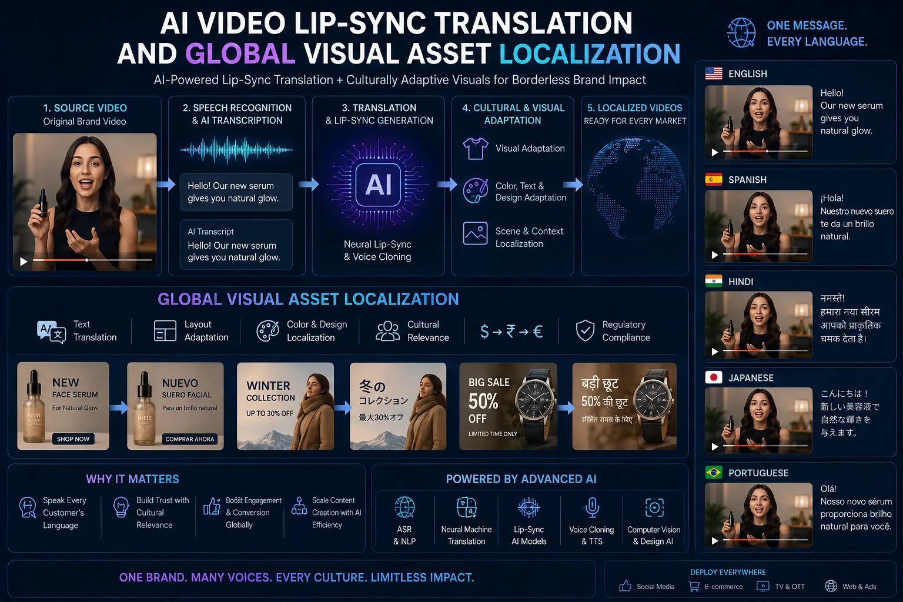
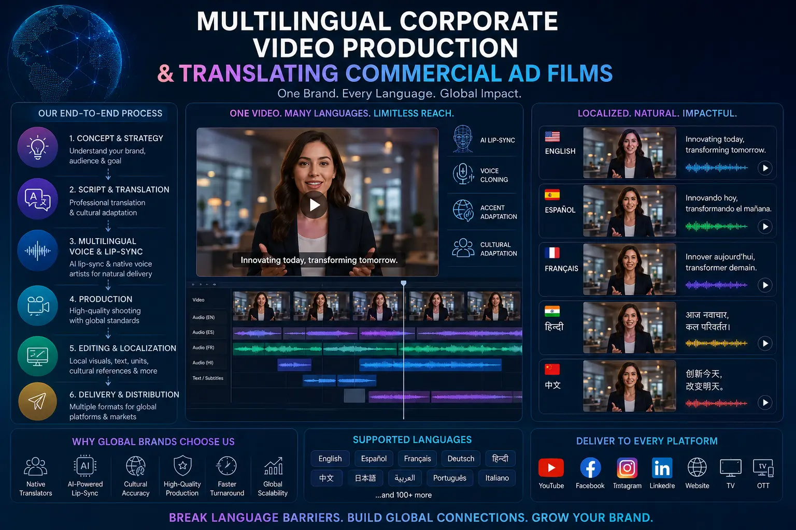

Deploying AI Face-Mapping and Lip-Sync Models for Borderless Brand Promotion Videos
The Challenges of Multi-Language Video Localization
In global digital marketing, localizing video content is a major operational challenge. If a brand wants to launch Brand Promotion Videos across multiple countries or regional language markets, they face a choice: either use standard audio dubbing (which leaves the actor's lip movements out of sync with the audio) or record separate video assets with different actors for each language. Standard dubbing can look unnatural and reduce engagement, while re-shooting campaigns for multiple regions is too expensive for most advertising budgets.
Modern AI tools resolve this localization bottleneck. By deploying AI Video Lip-Sync Translation workflows, production teams can alter the actor's lip movements in post-production to match the translated audio track. This technology enables efficient Global Visual Asset Localization, keeping the actor's performance intact across versions.
By utilizing these advanced workflows, brands can build scale into their **borderless digital ad campaigns**. This programmatic approach supports **Multilingual corporate video production**, allowing advertisers to localize commercial assets for different markets quickly and with less manual work.
How AI Lip-Sync Translation Works
Building a localized, lip-synced video involves several technical steps:
- Master Capture. The team shoots a high-production video ad with clean, steady lighting on the actor's face, supporting future generative AI facial re-mapping.
- Audio Translation. Using **conversational audio dubbing software**, editors translate the original audio while preserving the speaker's voice character and emotional delivery.
- Lip-Sync Mapping. The AI matches the actor's mouth movements to the phonetic structure of the translated audio, modifying the lips in post-production to match the new language.
- Asset Localization. The marketing team exports the final variations, **translating commercial ad films** for regional and global placements.
Consistent Global Messaging
Using AI Video Lip-Sync Translation helps brands launch unified global campaigns with localized, natural-looking video versions.
Fewer Re-Shoot Costs
Modifying the original actor's mouth movements with generative AI facial re-mapping saves budget by reducing the need for regional re-shoots.
Fast Multi-Language Editing
Applying automated dubbing and lip-sync tools speeds up **Multilingual corporate video production**, helping teams deliver localized edits quickly.
Improved Local Engagement
Providing synchronized, native-looking translations improves click-through and watch time metrics in target markets, boosting campaign ROI.

The Media Compliance Checklist for AI Translation
Deploying face-mapped and lip-synced commercial assets requires following clear legal and platform compliance guidelines:
- Actor Likeness Rights. Contracts with talent must include clauses that allow digital modification of their mouth movements for localization purposes.
- Compliance Disclosures. Ensure that ads using synthetic facial modifications carry the necessary platform disclosure markers.
- Natural Visual Verification. Editors verify the final output to ensure that the lip-sync looks natural, avoiding the 'uncanny valley' effect that can distract viewers.
AI Translation Tools
- HeyGen for high-quality lip-sync translation.
- ElevenLabs for conversational voice dubbing.
- Sync Labs for real-time video sync.
- Rask AI for automated campaign localization.
Localization Steps
- Import the master video file into the translation tool.
- Translate the audio track using voice-cloning technology.
- Apply the lip-sync model to match the new audio phonetic beats.
- Review and export the synchronized video variations.
Campaign Deliverables
- Multilingual commercial ad video variants.
- Localized social media product ads.
- Borderless corporate brand presentations.
- Archival assets for future language localizations.

Conclusion
AI lip-sync translation has simplified video localization for international markets. By using **AI Video Lip-Sync Translation** and **Global Visual Asset Localization** workflows, brands can translate commercial assets into multiple languages without losing the original actor's performance. Incorporating **generative AI facial re-mapping** and **conversational audio dubbing software** helps streamline **Multilingual corporate video production**, helping you launch campaigns globally.
At The PhD Ads, we build high-quality localized visual assets for global campaigns. Our production team leverages **premium media tech** tools to manage **translating commercial ad films** and execute **borderless digital ad campaigns**, helping brands expand their reach across regional markets.
Key Topics
Launch Localized Video Ads Globally
At The PhD Ads, we use AI-driven face-mapping and lip-sync translation to localize your brand videos, helping you deliver natural-looking multilingual campaigns across global markets.
Email: team@e2o.in